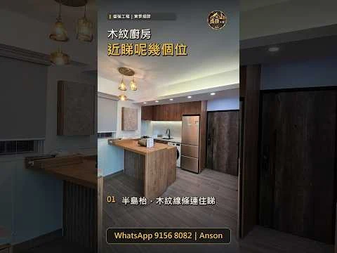
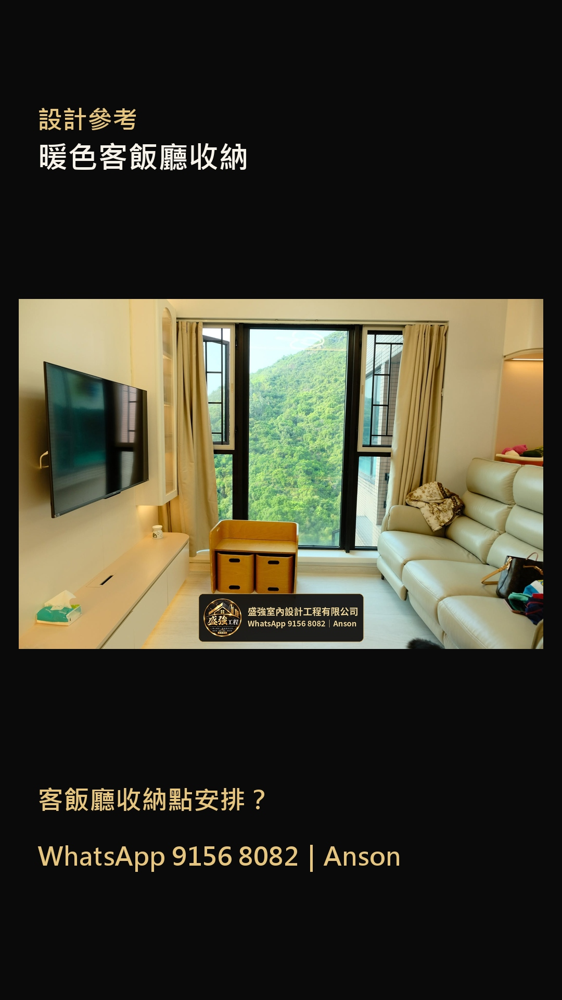
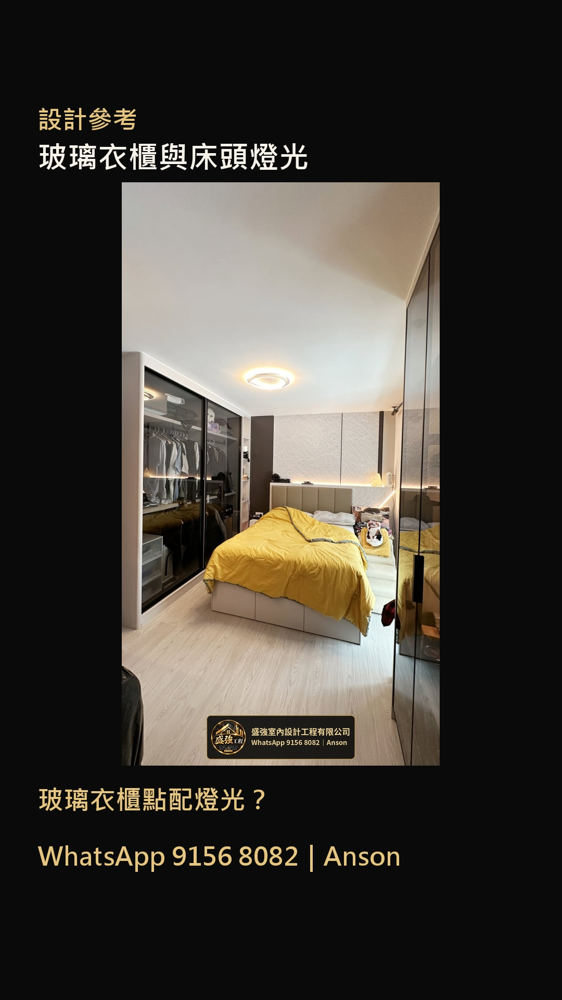
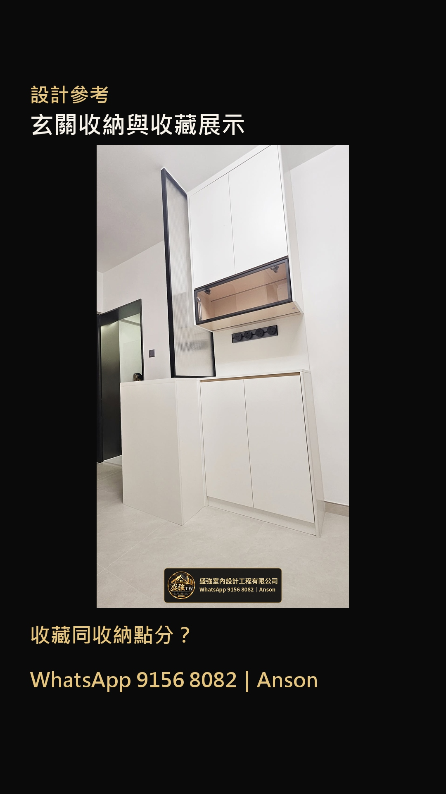
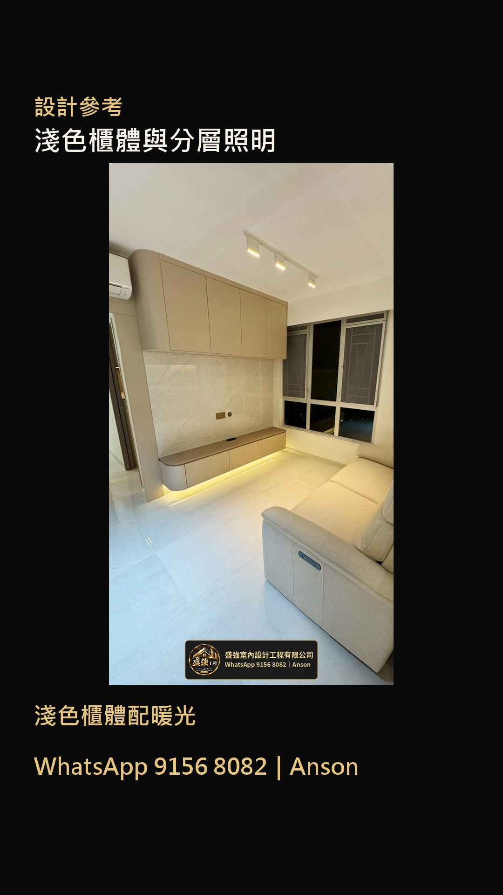
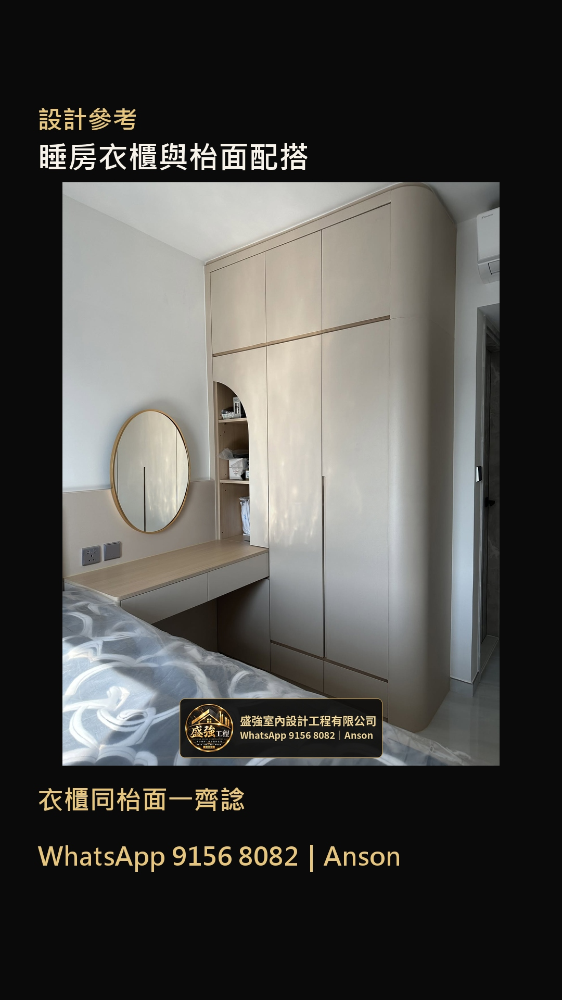

空間影片
空間及收納影片可到 YouTube 觀看；下方另有五組設計參考短片的 Facebook 及 Instagram 原帖。
相片展示空間及設計細節；來源、工程階段及盛強負責範圍可逐項向 Anson 查詢。設計參考不代表已核實的盛強施工案例。
五組設計參考短片
相片配樂短片，供設計參考；不作已核實的盛強施工案例。點選平台連結觀看原帖。





空間及收納影片可到 YouTube 觀看；下方另有五組設計參考短片的 Facebook 及 Instagram 原帖。
相片展示空間及設計細節；來源、工程階段及盛強負責範圍可逐項向 Anson 查詢。設計參考不代表已核實的盛強施工案例。
相片配樂短片，供設計參考；不作已核實的盛強施工案例。點選平台連結觀看原帖。




